{kind=link}
{kind=link}
{kind=link}
{kind=link}
{kind=link}
{kind=link}
{kind=link}
{kind=link}
{kind=link}
{kind=link}
{kind=link}
{kind=link}
{kind=link}
{kind=link}
{kind=link}
{kind=link}

{kind=link}
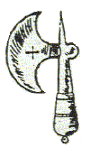
41
{kind=link}
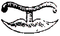
{kind=link}
42
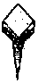
{kind=link}
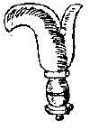
43
{kind=link}
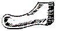
{kind=link}
44
{kind=link}
{kind=link}
45
{kind=link}
{kind=link}
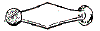
{kind=link}
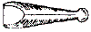
46
Footwear references from Holme
Much of the research for this page was done by D.A. Saguto and Rusty Moore,
to whom I am very grateful
Book III, Chapter 1, p. 2
|
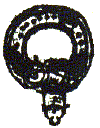 88 |
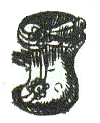 89 |
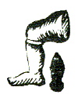 90 |
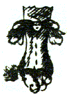 91 |
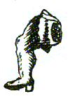 92 |
|
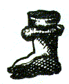 93 |
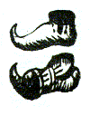 94 |
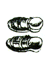 95 |
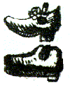 96 |
Book III, Chapter 1, p. 13
LXXXVIII. He beareth
Argent, a Garter Nowed Azurem Buckled, Edged, and
Studded, Or, by the name Garter.
G. 3 such A, born by the name Sydemers.
LXXXIX. He beareth Argent, a Roman hose, or Stockin, Sable, turned down, and garnished, Or. They are by the Romans termed Startops, because they cover but half the Leg and Foot; of us they are called Buskins and Gamashes, and are either Laced, Buttoned or Buckled down the out-sides of the legs, and reach only to the Instep of the foot, seldom past the middle.
XC. He beareth vert, an
hose, Argent, Gartered, Or, born by Hoseck.
The Hose or Stocken, is a cover for the
foot, leg and thigh, to shield them from Summers heat and Winters Cold.
A. an Hose S. is born by Glyn of Glyn in an Escochion
of Pretence.
A. a Midlegg hose, the Toe to the Sinister B.
charged with 3 Bends Sinsiter, O. is the coat of Eckhart, The crest
is the same with the foot erected; this may be termed an half hose, or an
hose couped below the Knee, for generally they are made to draw above it
to the middle of the Thigh or thereabouts.
In the Sinsiter Base of
this square, is placed a Shoe sole, or the Bottom of the Shooe,
which is born in Arms; for I find that Soleflat beareth Argent, 3 Soles
of Shooes, Sable.
S. 3 Shooe soles, the Toes erected A. born by
Solemain.
XCI. He beareth Argent, a Leg in full Aspect couped under the Knee, proper, adorned with a Roman hose, or Startop, Sable, turned down and garnished,
Or. This is also more briefly Blazon, a Romans
Leg in full Aspect, couped under the Knee. It is termed in full Aspect,
because it is full to sight, and not standing sideways, as those before and
after it do. 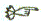
XCII. He beareth Argent,
a Boot, Sable, the Top turned down, Or, Soled Gules.
By the name of Boot. In a Boot, there is several parts.
The Top, and it may be either large or narrow,
it is of two pieces.
The Boot Leg is one entire piece, sowed up the
Calf or Shin, or out-side of the Leg.
The Spur Leathers, and they are two, the over
and under Leather.
A Sashune or Shashune, is stuffed or
quilted Leather, to be bound about the small of the Leg, of such as may have
long heels, to thicken the Leg, that the Boot may sit streight, and be without
wrinkles.
The foot of the Boot with its parts, see in the
shooe, numb. 96.
The Straps are those Leathers sowed within the
Boot on each side to draw them on.
A. 3 such S. turned down G. is borne by the name of
Boote.
XCII. He beareth
Or, a Moors Leg Couped below the Knee, proper, the Gamash,
Buskin, or Startop, Gules, turned down, Argent. In this
Leg I do confess my engraver was much mistaken, having made it I cannot tell
what; but I did design it for this Blazon (which I hope the candid Reader will
either understand what I mean, or pass it by as a Slip of the Tool (for as the
Tongue and Pen hath its errors, sic Sculptor habet Scalpturum, yet
pardonable.) He beareth Or, a Roman Leg Couped beneath the Knee,
proper, Sandall Gules, Startop, Sable, turned down and
garnished, Argent. This is born by the name of Garmash.
A. a Moors Leg, the Startop G. turned down O. by the
name Morby.
XCIV. He beareth Argent an Irish Broge, Sable and an Island Shooe, Gules. They are of some termed Dutch Shoes, for such turnup Soles their shooes have, which they use to slide and [sler] with on their Skades.
G. a Cheveron between 3
Irish Broges, O. born by Arthur of Ireland.
A. 3 Island shooes G. born by Gresty.
XCV. He beareth
Or, two Sandals, Sable, Buckles or Tyes, Argent. This
was the ancient way of securing the feet of Travellers from the hardness of the
Country passage; and consisted of nothing else but a Sole (either of
Leather or Wood) which was made fast to 2 or 3 Tyes or
Latches, which was Buckled [Book III,
Chapter 1, p.14] on the top of the foot; the
better sort adorned these Latches with Imbrauthered work, and set them with
stones.
A. 3 Sandalls S. Buckled and Adorned O. born by
Palmer.
XCVI. He beareth Argent, a Shooe, Sable; Sole, Gules; the Roses, Knots or Tyes, Azure; in base a Clog or Countrymans shooe, of the second, Sole, Or.
Parts of a Shooe.
The Heel Quarters.
The Languides or Straps, the one is tied with Shootyes,
the latter with Buckles.
The Vamp, is all the piece that covers the top of the foot.
The Instep, is the top of the shooe at the tying place.
The Toe, and the Toe Lining, is the lower part of the Vamp.
The Rann, the Leather as holds the Heel quarters and Vamp
to the Soles.
| The In-sole, | all the bottom Leathers of the Shooe that is trod upon | |
| The Middle Sole | ||
| The Out-Sole, |
The Channel of the Sole, is the Nick in the out- Sole, in which the Thread lieth,
it being rubbed down, covers the thread.
The Heel, which is made either of Wood or Leather.
The Lifts of the Heel, are those whole pieces of
Leather, of which the Heel is made.
The Jumps for Heels, are only shavings of Leather beaten together, of
which a
heel is raised.
The Top
piece of the Heel,
The Pegs that fasten the Leather of the heel together.
Shooes according to the fashion of the Toes, or Noses, are sometime round,
others square, then forked, and others turned up like a hook.
Shooes in the fashion of the heels, are some flat and low heeled, or with wooden
high heels, broad and narrow; others Leather heels, which some term Polony
heels.
Shooe soles, are either single sole shooes, or double Soles, or strong soled,
that is with 3 soles.
The size of Shooes, is the length of them by such and such
a number, as 1, 2, 3, &c. each size being the
fourth part of an Inch.
A Childs Shooe, of one or two sizes, is five inches and a half long, and
encreaseth to numb. 13. after that it begins to come into the sizes of a
Man.
A Man or Womans Shooe, is eight inches and a quarter long, when it begins with
the first or second sizes of a Man, what it exceeds that length every fourth
part of an Inch is taken for a size larger, and so forwards to numb. 15.
Several Sorts of Shooes.
Slap Shooes, or
Ladies shooes, are shooes with a loose Sole.
Galloshios, are false shooes, or covers for
shooes see chap. 5 numb. 70.
Pattanes, are Irons to be tied under shooes
to keep out dirt.
Slippers, are shooes without Heel quarters.
Cloggs are shooes with thick Wooden Soles.
Pumps, are shooes with single soles and no
heels, some term them Lackey-Boys, Foot-Men, or running shoes.
Pinked or raised Shooes, have the over leathers
grain part cut into Roses, or other devices.
Laced Shooes, have the over Leathers and edges
of the Shooe laced in Orderly courses, with narrow galloom Lace of any colour.
Imbranthered Shooes, are such as have the top of
the shooe covered with silk, sating, or velvet richly imbrauthered.
Close Shooes, are such as have no open in the sides
of the Latchets or Langiudes, but are made to close up like an Irish Brogue.
These are to travel with in foul and snowy weather.
A. 3 Shooes S. the Tyes G. is born by Fack.
S. a Cheveron between 3 Shooes A Laced G is born by Sherman.
A. 3 Cloggs (or shooes with thick Wooden Soles) S. Soles, O. is born by the name
Clog.
He beareth Or, A Galotia, Sable. This is a kind of false shoe, or a case for a shooe, to keep them clean in foul Weather, and is a very good Bearing; for 3 Galotia's Sable, Shoes Gules, in a Field Argent, is the coat armor of Wargenber; see the form of the Galotia, cap. 5 numb 70.
He beareth Azure, a
Slipper (or a Pantable,) Argent, what a slipper is, I need not much
to describe, being a thing of so common a use amongst us; it is the coat of a
worthy Family in Italy, called Sandaliger. See its form
cap. 5 numb. 71.
B. 3 Slippers O. is born by Slipper. The
same with the Toes erected, is born by Sleeper.
He beareth Argent, two (or a pair of) Patens and a Padle Iron, Sable, is born by Padmore; what the paten is, your Gentlewomen will tell you; it is a thing of Wood like a Shooe sole, with Straps over it to tye over the shooe, having an Iron at the bottom, to raise the wearer thereof from the Dirt; by means whereof clean shooes may be preserved though they go in foul Streets; see its form and fashion, chap. 5. numb. 71.
Book III, Chapter III, p. 40
|
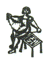 36 |
Book III, Chapter III, p. 99
XXXVI. He beareth argent, A Shooe-maker upon his seat with his tools (or St. Hugh Bones) on his right hand thereon, forming of a Shooe, all proper. It is Blazoned, a Man on a Seat, with St. Hugh's Bones by him; exercising of the Gentle Craft, all in their proper colours; where note that the Shooe-maker's Apron is always green. This is born by the name of St. Hugh.
Terms Used in the Gentle Craft
Cutting out.
Closing the Heel Quarters and Vamp.
Rounding the Sole.
Setting the Sole on the Last.
Sowing on the Sole.
Breaking down the Rann.
Stitching the Sole to the Rann.
Rounding the Soles on.
Channelling the Sole, is making a riggett in the
outer Sole for the Wax Thread to ly in.
Sowing or stitching the sole round.
Rubbing it with a rubbing Stone.
Laying or beating too the stitch.
Sowing the Heel.
Pegging on the Heel pieces.
Slickening it off, polishing the upper Leather.
Pinking the over Leather, cutting the grain of the Leather into Roses, Knots,
and orderly devices.
Colouring the soles, painting the edges with India
red.
Burnishing the soles, setting a shining polish on the red.
Painting the stitches, laying the stitches which lie upon the
Rann of the shooe with white.
Closing Thread, that as soweth the heel pieces and over leather.
Stitching Thread, is that as soweth the Soles to the Rann.
Leather or Heel thread, is that as sowes the heel to the shooe.
The Size of a shooe, is the measure of its length,
which is in Children divided into 13
parts; and in Men and Women into 15 parts; the
first of them being five Inches long before it
be taken for a size, what the shooe exceeds that
length, every fourth part of an Inch is taken for the size 1, 2, 3.
and so forwards to 13 which
is called
the Boys or Girls thirteens, or the short thirteens, and
contains in
length 8 inches and a quarter,
from
which measure of
8 inches and
a quarter, the
Size of
Men and Women, called the long
size or
Mans Size, begins at 1, 2,
3, &c. to the number
15, each size being about the fourth
part of an Inch
as
aforesaid; so
that a
Shooe of the long
fifteens is
in length
12 Inches just. Some term it a Gage or Shooe Measure.
Grain of the
leather, the hairy side.
Flesh side of the
leather.
Book III, Chapter V, p. 210
|
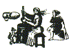 70 |
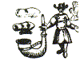 71 |
Book III, Chapter V, p.244
(LXX)...The Galotia set in this quarter, I have spoken of it) elsewhere, see chap.1 numb. 96. This is to shew the true shape and form of it.
LXXI. He beareth Argent, a China Man in Full Aspect, Garment Gules, holding forth both his Arms, and with his right hand supporting of a China Trumpet, Or.
On the partition score which divideth these quarters, numb. 70 and 71. is placed a Stone or Rock, Gules, whereon is set an Old Man Naked to the Thighs, cloathed in a short Coat close girt, Sable; his hands before his Breast, on his shoulders a Mantle (pendant backwards) or hanging behind him, Argent. This is the Crest of Rein of the Rhine Palatinate.
The Slipper or Pantable above, and the Paten under it, set on the dexter side of this last quarter, I was constrained to set it here, though I have treated of them and by whome born elsewhere, as chap. I, numb. 90.
Book III, Chapter V, p.246
|
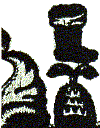 120 |
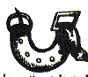 121 |
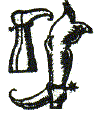 122 |
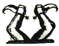 123 |
Book III, Chapter V, p. 249
CXX. ... In the sinister
Chief, is a Boot to the Sinister (that is to say, the Toe is
turned to the left side of the Field, whereas generally all charges look
towards, or set to the right side) the Tops, Turned down.
But I should rather take this for a Roman Star-top; however by the name
that beareth it, it should be no other then a Boot for A. 3 such S. Tops O. is
born by the name Boot.
Per Fesse S. and Barry bendy A. and B. a Lion Rampant
issuant O. and such a Boot S. Top O. is the States Arms of Schwandorf.
CXXI. He beareth Argent, a Girdle in the form of Seimicircle (or Cressant as some say) the Pendant, Azure; the Buckle, Runner and Taps, Or. Borne by the name of Girdler....
CXXII He beareth Gules, a Boot, bowed in the Knee, with one indent in the top, the Toe sharp pointed, and Erected or Turned up, Argent; the Spur, Or. Born by the name of Kolbheim of Alsatia in Germany. This may be termed a Dutch Boot, because all their shooes and Boots [Book III, Chapter V, p. 250] for their Skates to slide upon, have all such hooked, or turned up pointed Toes.
In the Dexte side and Chief of this Quarter, is the Crest of Crummell of the Nether Rhyne Palatinate, viz. a Boot couped below the Knee, the Sole erect, Argent; Spur, Or. Some term it a Boot the foot ercted [erected] and couped under the Knee; others call it a Boot Leg, the Foot Elevated.
CXXIII. He beareth
Argent, two Dutch Boots, the Soles erected, Imbowed in the Knees, and
endorsed, Sable, Issuant out of an hill in Base, Vert, Spurred,
Or. Born by the name of Boote, in High Dutch Leersen.
Two Dutch Boots Endorsed and Imbowed, one A, the
other G, the Feet erected and Spurred O is the Crest of Kolbsheim
aforesaid, numb.22 [numb.122].
Book III, Chapter VI, p.284
|
 41 |
 42 |
  43 |
 44
|
45 |
  46 |
Book III, Chapter VI, p. 291
5. WE are now to give some Examples of the Tools or Instruments belonging to the Cordwainers alias Shoe-makers, which are born in Coats of Arms, or are set forth as Signs, Tokens, or Cognizance of Persons, Families, or Houses.
XLI. He beareth Sable, a
Shoe-makers cutting Knife, between a Punching
Lead and an Aule, Argent: the Halves
or Hafts, Or. Though these be set here together, yet their bearing is
different: for I find that S. such a Cutting Knife, is born by Spoonife.
G. 3 such, is born by Skinger.
This is the old way of making their Cutting Knife, with an Haft: which
many would rather take to be a Poll-ax, an Instrument of War, than to
belong to a Shoe-maker.
The Punching Lead, is for the Punching of Holes in the instep and Langetts of a
Shooe for the ties to go through: the softness of which Lead secures the edge of
the Punch, which otherwise would be soon blunted if it struck into a harder
thing.
V. a Cheveron O. between 3 such Leads A. born by Leadbate.
The Aule, is also termed a stitching Aule, or a
sowing Aule: which
then it should bend something in the blade, and not be so streight: however an
Aule this is, and is used in Coats of Arms: as,
S. 3 Aules points erected A. Hafts 0. born by
Aule.
Some hold that the point of the Aule being downwards needs no mentioning, it being the proper posture for it: yet others affirm that all Instruments having sharp points, are generally born with points upright.
XLII. He beareth Azure, a
Shoe-makers cutting Knife, and a pegging Aule, proper.
Any Instrument made of Silver, Tinn,
Steel or Iron: for the use of the Workman, is born in Arms of that colour,
viz, white. They may be said to be
proper, or the colour, or mettle, not mentioned: also note that all hafts or
halves, naturally made of Wood (as of the Aule, cutting Knife,
paring Knife,
or other Tradesman [Book III,
Chapter VI, p. 292] Tradesmens Tools) if they be born in Arms, are generally made of Gold;
In such things there needs no mentioning them, but if they be born otherwise
coloured, then nominate the same. This is the Cutting Knife, now in use, the
blade and handle being all Iron and Steel: about which is usually sowed some foulds of Leather, either red, black, or yellow, the secure the Hand, and for
its more stedfast and stedy holding.
B. 3 Cutting Knives A. handle G. is born by
Cutt.
S. 3 Pegging Aules is born by Pegallin.
XLIII. He beareth Argent, a
Paireing
Knife Azure, Handle or haft, Or; and an heel Tack, Sable. The point on
the back of the Shoomakers pareing Knife is to Score or Trace out the
Leather before he venture to cut it, according to the saying, Score twice
he/ore you Cut once, else they will
cut themselves out of Doors.
There is also two sorts of Tacks used by them, the
Sole Tack, it is only with a single nick about the square head: and the
heel Tack, which is much larger and longer, it having a double, some a treble nick about
the head.
A. a paring Knife B. Handle 0. is brn by Dalmate.
G. 3 such A. Handle 0. is born by Cobler.
A. a Cheveron between 3 Shoomakers Tacks S. by Nalbrug.
XLIV. He beareth Gules, a Shoomakers Last, Or: and a Shooe-sole, Argent. Some term this a Pattern for a Shooe-sole; of the first I have read that a Cobler call�d to Death to bring him his Aule, but he reached him his Last.
B. 3 Lasts 0. born by Last.
S. a Fesse between 3 Shooe-soles A. born by Sole, or Soley.
G. 3 Shooe-soles erected O. born by Polis or Police.
S. 3 in Triangle, the Toe parts pointing to each corner of the Field
O. is born
by Soler.
XLV. He beareth Argent, a Shooemakers pollishing stick, (or hollin stick) and a Bakers Brake, Ringed at the Ends, Gules. This is one of St. Hughes Bones (as they term all their Tools) and it is that wherewith they polish and slicken their Leather, when the Shooes are wrought up.
XLVI. He beareth Sable, a Petty Boy,
or a Shoomakers petty Boy, between a Mounter and a Dresser, in Pale, Or. These are all Instruments belonging to the
Cordwiners Occupation; and are used generally for their burnishing and
smoothing down the Stitches, and to pair pieces of Leather upon.
For other Instruments for Shoomaking, see the Plate following
chap. 8. numb. 112. to
117.
Book III, Chapter VIII, p.347
|
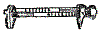 112 |
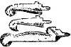 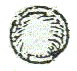 113 |
114 |
||
|
115 |
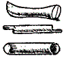 116 |
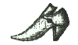 117 |
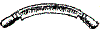 118 |
|
Book III, Chapter VIII, p. 349
Shoomaker's Tools, or St. Hugh�s Bones
6 Let not any of my Fellows or Masters of the Gentle Craft, take it in ill part, that all their Tools were not set together, seeing St. Hughs Bones ought not to be separated; for I do declare, it was not mine, but the Informers Fault, that gave them to me so mincingly, as if he had been afraid I should have robbed him of his Art; in which I did not rest satisfied, till a more Ingenious person informed me of the whole, which take as follows.
CXII. In this quarter is, the Shoomakers seat fixed on a ground Plot in Base. On this seat upon the right hand of the Work-man, is made several Divisions, whereof one is for his Wax and Thread, another for his Awls, and another for the rest of his Tools, so that what he wants he can easily put his hand to without confusion or tumbling of the rest.
In the chief is the Shoomakers Measure, by which he taketh the length or size of all feet, whether Children, Men or Women: As for the Terms of each length I have spoken of them elsewhere, chap. 3. numb. 36. to which place I refer you, only here shewing you the said Measure, which is so made that it runs one piece into another, that the Feet at each end coming together, makes one perfect Shooe.
S. the likes in Fess between 3 Awls O. Blades A. is born by Mensure.
In Similar Base is a
Punch, which is only to make holes in the upper Leathers for Shooties or
Buckles, to make the Shooes last on the feet; There is two sorts of them, the
common on which there is a figure, and the more gent and neat Punch, of which
you have the shape of one, numb. 114.
G. A Cheveron between 3 such A. born by Puncher.
S. 3 Such A. born by Holer.
CXLII. In this quarter are three sorts of
Hollin Sticks used by Cordwainers;
not that they are made of Hollin
Wood, but a peculiar name so given them, with them they
burnish and polish the upper Leather, and sides of the Sole Leather; also by the sharp ends they run Riggets, and score the Leather with what Devises they
please.
B. 2 Hollin Sticks O. and a Ball of Wax A. born by
Stitchell.
In the Sinister chief is a Ball of Shoomakers Wax, to Wax their Thread, which they call Stitching Thread, and Stitching or Tatching ends; without which they cannot work, or let a Stitch in a Shooe; only this perplexity it hath with it, in the Winter it is so hard that it works none but before a Fire, and in the Summer it is so soft, that it must constantly be kept in Water.
CXIV. He beareth Sable, a pair of Pincers, or rather Nippers, and a Punch, Argent. These are to be termed Shoomakers Nippers, being contrary in the Shanks to common Pincers, as having a sharp point in the end of one; and a slit in the other, to strain up a Tack or Nail: There are two sorts of them, as in the next, numb. 115.
In this square is the figure of the genteel Punch, of whom I spoke before numb. II. and this may not unfitly be born by the greatest Subject, being an Emblem of Safety, for by the help thereof both Sandals and Shooes are made secure on the Feet, by which means we may Go, Run, or Leap, without Jeopardy.
CXV. He beareth Gules, a
pair of Pincers, or Hammer Pincers extended or laid
open, Argent. Born by the name of Pinch. This kind of Instrument (as the
Nippers abovesaid) doth perform the office of an Hammer, both to drive a Nail
with the flat place at the pinching part, and also to pull out a Nail or Tack by
the bottom nicked part; so also it can with its point either Bore a hole, or
prize up a Nail sunk too deep into the Sole or Last, besides the pinching part
which is Toothed for diverse uses, as to draw out the Leather, force out a Tack.
S. the like extended in form of a Cheveron A. between
two Awls, and a Rowl or Knot of a Tatching Thread,
is the Arms of the Company of Journeyman Shoo-makers in the City of Chester.
In the Sinister chief is a pair of Wedges, these are to [Book III, Chapter VIII, p.350] raise up a Shooe in the in�step, when it is too streight for the top of the foot: Shoomakers love to put Ladies in their Stocks; but these Wedges like Merciful Justices, upon Complaint soon do ease and deliver them.
In the Sinister Base, is placed the Lead or Cistern, that being filled with Water, and set in a cool place, keeps their Balls of Wax from running about, and makes them so indifferent hard that they may be wrought with.
CXVI. He beareth in a Field Azure, three Wooden Tools of the Shoomakers in Pale, viz, the stitching Stick, the fore-part Stick, and the Long Stick; all three useful for them, but seeing I can find none such in Arms, I pass them over.
CXVII. He beareth Argent, an High Heel shooe Pinked Sable, Soled Gules. Born by the name of Shooe or Shone. This is a Shooe of the Gentest fashion, which I have set amongst the Tools, because my engraver did not do his part, in making those Shooes in chap .1. numb.96. B. 3 Spanish Leather Shooes A. born by Calshie.
A. a Fess G. between 3 such S. Soles and Pinked of the second, by the name of Pindor]. That is termed the Pinking of a Shooe, when the grain of the Leather is raised by a sharp pointed Tool, that the inner part is seen; which is done in a certain order, and also into Roses and Flowers, as they fancy.
In the Base of this quarter, is placed the Shoo-makers Trees, they are for the stretching out of the leg of a Boot that pincheth, or is too straight for the Leg and Calf; it goes with a Running Wedge in a Rigget, between two other peeces of Wood cut in the shape of a Leg.
{kind=link}
{kind=link}
{kind=link}
{kind=link}
{kind=link}
{kind=link}
{kind=link}
{kind=link}
{kind=link}
{kind=link}
{kind=link}
{kind=link}